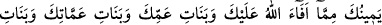
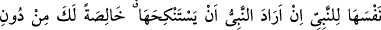
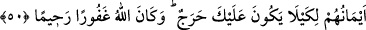
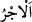
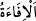

50. Ey Peygamber! Mehirlerini verdiğin hanımlarını, Allâh’ın sana ganîmet olarak
verdiği ve elinin altında bulunan cariyeleri, amcanın, halanın, dayının ve teyzenin
seninle beraber göç eden kızlarını sana helâl kıldık. Bir de Peygamber kendisiyle
evlenmek istediği takdirde, kendisini Peygambere hîbe eden mü’min kadını, diğer
mü’minlere değil, sırf sana mahsus olmak üzere (helâl kıldık). Şüphesiz biz,
hanımları ve ellerinin altında bulunan cariyeleri hakkında mü’minlere neyi farz
kıldığımızı biliriz. (Bu hususta ne yapmaları lâzım geldiğini onlara açıkladık) ki,
sana bir zorluk olmasın. Allah bağışlayandır, merhamet edendir.
“Ey Peygamber! Mehirlerini verdiğin hanımlarını,” eşlerini…
“__WORD__ (ücret)”, bir akidden ve akid yerine geçen bir sözleşmeden doğan haktır.
Dünyevî olsun uhrevî olsun yapılan işin sevabından sahibine dönen şeydir. Burada ise
mehirden kinâyedir. Çünkü mehir kadının kadınlık unsurundan faydalanmaya/cinsî
münâsebete karşılık verilen ücrettir.
Mehrin verilmesi, ya muaccel/peşin olarak verilmesidir ya da nikah akdinde mehrin
belirlenmesidir. Hangisi olursa olsun Hz. Peygamber (s.a.)’e hanımlarının helal
kılınmasının mehirlerinin verilmesine bağlanması, helâl olma hükmünün zorunlu olarak
mehrin verilmesine bağlı olmasından dolayı değildir. Çünkü mehir belirmeden de nikah
akdi sahih olur. Gerdeğe girilip girilmemesi takdirlerine göre ya mehr-i misil ya da bir
hediyye (müt‘a) vermek gerekir. Bilakis âyetteki ifâde, Hz. Peygamber (s.a.) için efdal
olanı tercih etmek amacıyladır.
“Allâh’ın sana ganîmet olarak verdiği ve elinin altında bulunan...” yâni sağ elinin
sâhip olduklarını, yâni câriyelerini sana helal kıldık.
“__WORD__ bir kişinin malını ganîmet yapmak demektir. Gölgeye (__WORD__) benzetilerek
zahmet ve meşakkatsiz elde edilen ganîmete “__WORD__ denilmiştir. Bu, dünyâ metâının en
değerlisinin bile gelip geçici bir gölge yerinde olduğuna dikkat çekmek içindir.
Fakihler: “Kâfirlerin mallarından alınması helal olan her şey fey/ganîmettir.” demiştir.
Buna göre harp ve şirk ehlinden emir, komutan ve devlet başkanına gelen ve ulaşan her
fayda feydir. Harp devam ederken şirk ve küfür ehlinden zorla alınan her ganîmet feydir.
Cizye feydir. Sulh ehli olanlardan, yâni kendileriyle bir takım antlaşma yapılarak elde